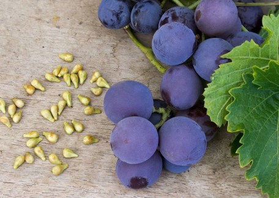

+7 (978) 043 60 03
+7 (978) 043 60 03
Виноград – один из самых потребляемых фруктов во всем мире. В древней Европе листья и сок виноградных растений испокон веков использовались в традиционном лечении. Помимо того, что виноград является источником витаминов и клетчатки, виноградные косточки содержат немало таких важных нутриентов, как полифенольные соединения, основными среди которых можно считать проантоцианидины. Проантоцианидины могут быть использованы в качестве функционального ингредиента для решения различных проблем со здоровьем, стимулируя естественные биопроцессы организма.
В чем состоит польза экстракта виноградных косточек?
Научные публикации сообщают, что полифенолы виноградных косточек отличаются множеством полезных и даже лекарственных свойств, таких как:
- смягчение канцерогенеза клеток в тканях молочной железы (1),
- модулирование артериального давления у лиц с предгипертензией (2),
- поддержание гомеостаза глюкозы при диабете (3),
- защита от ишемических травм (4),
- содействие заживлению кожных ран (5),
- защита от диабетической нефропатии (6).
Полифенолы виноградных косточек (как и большинство других полифенольных соединений) являются мощными антиоксидантами. Действительно, польза для здоровья полифенольных соединений, включая проантоцианидины виноградных косточек, традиционно приписывалась их антиоксидантной активности (7). Антиоксидантная активность может быть основным фактором, способствующим роли полифенолов виноградных косточек в защите от рака молочной железы (1), заживлении ран (5), и ишемических травм (4). Однако полифенолы, содержащиеся в виноградных косточках, способны индуцировать дополнительные полезные механизмы, модифицирующие болезнь. Например, полифенолы виноградных косточек обладают возможностью смягчать диабетическую нефропатию с помощью механизмов, включающих снижение экспрессии конечных продуктов гликирования и фактора роста соединительной ткани в почках (6). В качестве другого примера полифенолы виноградных косточек способствуют поддержанию гомеостаза глюкозы при диабете, в частности, путем активации сигнальных путей инсулиновых рецепторов (8). Последние наблюдения из экспериментальных исследований in vitro (9, 10) и доклинических исследований (11) показали, что полифенолы виноградных косточек могут оказывать влияние на специфические нейропатогенные механизмы, лежащие в основе болезни Альцгеймера, и предполагают потенциальную новую роль полифенолов виноградных косточек для ее лечения.
Влияние экстракта виноградных косточек на гликемический контроль, сывороточные липопротеины, воспаление и массу тела
Буквально в этом году был опубликован соответствующий систематический обзор экспериментальных данных и мета-анализ, целью которого являлся анализ влияния экстракта виноградных косточек (ЭВК) на гликемический контроль и сывороточные липопротеины, воспаление и массу тела (12). В этот мета-анализ были включены 50 исследований. Результаты исследований показали значительное снижение уровня глюкозы плазмы крови натощак (-2,01), общего холестерина (-6,03), липопротеидов низкой плотности (ЛПНП) (-4,97), триглицеридов (-6,55) и концентрации С-реактивного белка (СРБ) (-0.81) после терапии ГСЭ. Экстракт виноградной косточки не влиял на уровень гликированного гемоглобина (HbA1c), уровень холестерина ЛПВП и антропометрические показатели.
Воздействие экстракта виноградных косточек на давление крови
В более раннем обзоре рассматривалось влияние терапии экстрактом виноградных косточек на колебания систолического/диастолического артериального давления (САД/ДАД). Для мета-анализа были взяты доступные рандомизированные контролируемые исследования (13). Были проанализированы 12 публикаций, включающих исследование 810 субъектов в 16 клинических испытаниях. Общий анализ выявил существенное понижение САД (-6,077) и ДАД (-2,803) по итогам терапии, проведенной с помощью экстракта виноградных косточек. Если проанализировать данные подгрупп, то выясняется, что у более молодых испытуемых (средний возраст < 50 лет) можно было наблюдать устойчивое снижение уровня САД (-6,049) и ДАД (-3,116), а у пациентов с метаболическим синдромом (-8,487). Проведенный далее мета-регрессионный анализ выявил, что такие показатели, как возраст, индекс веса тела и исходное артериальное давление оказались отрицательно связаны с заметным снижением САД и ДАД в периоде, последовавшем за лечением.
Снижение уровня кровяного давления было более явным в продолжительных исследованиях (срок которых составлял более 8 недель). Не было обнаружено каких-либо признаков предвзятости опубликованных исследований. Данные результаты продемонстрировали, что экстракт виноградных косточек оказывал положительное влияние на показатели давления крови, и это влияние было намного заметнее у молодых или тучных людей, равно как и у пациентов с метаболическими нарушениями. Учитывая относительно небольшие масштабы выборки, авторы согласились с тем, что вполне оправданным было бы подтверждение итогов исследований в крупномасштабном, долгосрочном, многократном рандомизированном контролируемом исследовании, в том числе обязательно среди пациентов с артериальной гипертензией.
Дозировки экстракта виноградных косточек
Применение экстракта виноградной косточки хорошо переносится и является безопасным, по крайней мере в экспериментальных дозах до 2500 мг/сутки (15).
Дозировка зависит от содержания активных компонентов в экстракте. Так, экстракт содержащий преимущественно проантоцианидин (эта информация указывается на упаковке) эффективен в дозировке 100-400 мг в день, а содержащий преимущественно полифенолы 800-2000 мг в день.
Принимать экстракт можно один раз в день или разделяя суточную дозу на два приема независимо от употребления пищи.